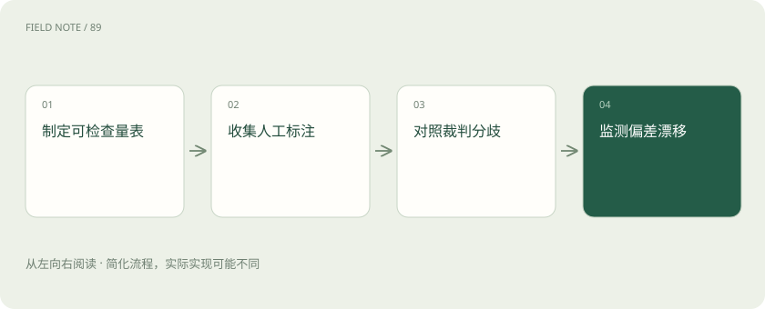

先读哪些知识
先用一个类比理解
像聘请阅卷老师，先用标准卷确认他如何扣分。
类比只帮助建立直觉，不等同于技术的完整机制。
一图看懂

概念边界
模型裁判按规则评价答案，可以提高评测覆盖，但它会受表达长度、顺序和文风影响。裁判也可能无法识别专业事实错误，因此评分标准应拆成事实、完整性、引用支持和格式等可检查维度。
内部怎样运作
先让领域人员标注一组样本，比较裁判分数与人工判断的分歧，并检验交换候选顺序是否改变结论。固定裁判版本与提示，持续审查高分错误和低分正确样本。
把机制放进具体场景
两份维修答案结论相同，一份更长，裁判却总给长答案高分。交换展示顺序并隐藏模型名称，可检查位置和身份偏差；再要求对关键结论给出证据位置，观察评分是否真正依据事实而非文风。
取舍与容易忽略的限制
裁判校准不是只算一个整体一致率。对安全限制、引用支持和领域事实等维度，应单独分析误判类型，尤其关注看似高分却包含关键错误的答案。裁判版本或提示变化后，旧分数可能不再可比；保留固定锚定样本和人工复查记录，才有条件解释评分变化到底来自系统还是评审口径。
放进真实场景
SCENARIO
两份答案都使用相同错误的过时条款，裁判可能判为同样优秀。给裁判提供适用版本的权威依据，并检查其引用是否支持结论，比只让它比较文笔更合适。
别踩这个误区
裁判自信程度不是准确率，同一家模型家族的评价可能存在共同盲点。
想一想
裁判与自己给出的答案一致，是否证明裁判可靠？
不能，需要独立人工标注与分歧检查，避免共同偏差。
关联阅读
资料与边界
本文为原创知识讲解。类比和图示经过简化；示例数字不代表实测或报价。整理日期：2026-11-04。文末列出对应技术的原始资料，具体功能与版本支持请以原文为准。